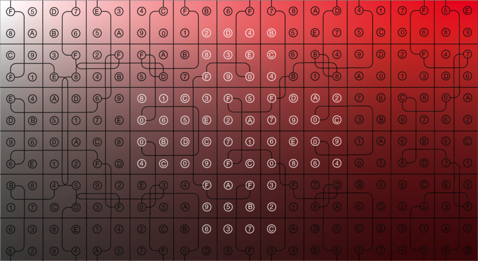

Author: Lauren Herring
In 2013, Hunt organizers were required to distribute first aid kits to all teams for safety reasons of some sort. They were careful to stress that the first aid kit was not a puzzle.
At the 2014 kickoff, teams received a first aid kit, among other things. They were told, for example, that the souvenir tote bag was not a puzzle, but they were not told that the first aid kit is not a puzzle. Hidden inside the first aid kit was a packet of 66 cards.
The cards assemble into a grid 11 cards across and 6 cards down, going from lighter to darker top-to-bottom and from less saturated to more saturated left-to-right.
Each card has four circles on it, with a letter or number in each circle. Certain sets of six circles are connected by lines; each line enters the grid in the first card of a particular column, winds across the grid, and ends in the last card of the same column. The six numbers marked by a given line correspond to the hex code of a named color.
#FFE4B5 - moccasinWhen the color names associated with each column are read left-to-right, the first letters of the color names spell the answer, MALPRACTICE.